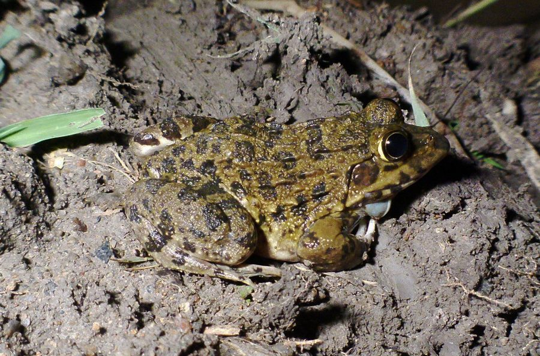

चित्तीदार मेंढकJerdon's Bullfrog
Hoplobatrachus crassus · Dicroglossidae · AMP-0008

- Scientific name
- Hoplobatrachus crassus (Jerdon, 1853)
- Family
- Dicroglossidae
- Hindi
- चित्तीदार मेंढक
- Status here
- native
- IUCN
- LC
When to look कब देखें
Present all year.
चित्तीदार मेंढक / Jerdon's Bullfrog
Hoplobatrachus crassus (Jerdon, 1853) — Dicroglossidae
चित्तीदार मेंढक (जर्डन बुलफ्रॉग) — पूर्वी उत्तर प्रदेश के बड़े जलाशयों, नदियों और तालाबों के मिट्टी के किनारों (mudbanks) में पाए जाने वाला एक विशालकाय मेंढक है। यह इस बैच का सबसे बड़ा उभयचर है, जिसकी लंबाई 60 से 100 मिलीमीटर तक हो सकती है। इसकी मुख्य पहचान इसका मजबूत शरीर, चमकीली काली चित्तीदार धारियाँ और पिछले पैरों पर खुदाई के लिए विकसित एक कुदाल जैसा उभार (shovel-like metatarsal tubercle) है। यह तालाबों के किनारों पर गहरे बिल बनाकर रहता है। इसे अक्सर भारतीय बुलफ्रॉग (Hoplobatrachus tigerinus) समझ लिया जाता है, लेकिन यह आकार में उससे छोटा, अधिक गठीला और गहरे भूरे-कांस्य रंग का होता है।
Quick Identification त्वरित पहचान
| Feature | Description |
|---|---|
| Size | Large frog (60–100 mm snout-vent length); heavy-bodied and robust |
| Metatarsal Tubercle | Large, black, shovel-like spade on the inner hind foot for burrowing |
| Skin | Covered in longitudinal skin folds with irregular warty tubercles on back |
| Colouration | Bronze-brown or olive dorsum with large dark spots; white belly, dark throat in males |
| Hind Limbs | Short and thick legs; toes are fully webbed for swimming |
| Tympanum | Very large, distinct ear-drum behind the eye; almost equal to eye diameter |
Field tip: Scan muddy banks of ponds and rivers at night. Look for large, bright eyes reflecting torchlight. They sit in the mouth of their burrows and leap into the water when approached.
Morphology आकारिकी
Biometrics (typical measurements in the northern Indian plains):
| Measurement | Range |
|---|---|
| Snout-vent length (SVL) | 60–100 mm |
| Weight | 45–110 g |
Description: Jerdon's Bullfrog is a large, stout-bodied dicroglossid. The head is broad, with a pointed snout and large eyes. The dorsum has a yellowish-green or bronze-brown ground color, decorated with bold, dark brown patches. The skin of the dorsum is rough, featuring distinct longitudinal ridges. A key anatomical feature is the inner metatarsal tubercle on the hind foot, which is black, sharp, and shovel-like, helping the frog dig into hard mud.
The hind toes are fully webbed. In males, twin vocal sacs are present on the sides of the throat, turning blue-black when expanded.
Behaviour & Ecology व्यवहार और पारिस्थितिकी
Hoplobatrachus crassus is semi-aquatic and burrow-dwelling. Unlike true aquatic frogs that float, it spends the day inside self-dug burrows in wet clay banks, sitting with only its head exposed.
- Burrowing: Using its metatarsal spade, it excavates burrows up to 30 cm deep in damp mudbanks.
- Dietary generalist: Due to its large size, it is a voracious predator. It feeds on large insects, small crabs, other frogs, and even small mice or nestling birds.
- Breeding call: Males call from shallow water near mudbanks. The call is a deep, loud grunt, repeated at long intervals ("ock-ock-ock").
Tadpole Stage
- Body form and size: Large, dark green or olive-brown tadpole, reaching 50–60 mm in length before metamorphosis.
- Aquatic habitat preference: Prefers deep muddy pools, slow river channels, and marshy floodplains.
- Duration to metamorphosis: Approximately 6 to 8 weeks.
- Distinguishing features: Heavily built tail with low fin height; possesses strong, sharp black jaws for feeding on aquatic larvae and small tadpoles (carnivorous behavior).
Life Cycle / Phenology जीवन चक्र
- Breeding season: Peak activity coincides with the main monsoon months (July to September).
- Eggs: Females lay large floating sheets of eggs containing 2,000–5,000 eggs.
- Metamorphosis: Hatching occurs within 48 hours. Metamorphosed froglets emerge in September and immediately excavate small burrows in the soft mud of drying ponds.
Host Plants or Prey आहार
Primary food items:
- Insects: Grasshoppers, crickets, and large beetles.
- Vertebrates: Small frogs (like Fejervarya limnocharis), young mice, and geckos.
- Crustaceans: Freshwater crabs (Paratelphusa spp.).
Predators / Natural Enemies शत्रु
- Raptors: Brahminy Kites and Eagles hunt them along wetlands.
- Snakes: Large Checkered Keelbacks (Xenochrophis piscator) and Spectacled Cobras (Naja naja).
- Mammals: Jackals (Canis aureus) dig them out of mudbanks during winter.
Agricultural / Human Relevance कृषि प्रासंगिकता
Natural insect control. Jerdon's Bullfrog is an apex insectivore of Basti's agricultural floodplains. It controls populations of large grasshoppers and beetles that infest sugarcane and cereals. Local populations face threats from agricultural chemical runoffs and the clearing of native mudbanks for concrete canal walls.
Expected Locally स्थानीय रूप से अपेक्षित
Not a field record. Written from published accounts for eastern Uttar Pradesh. No confirmed local sighting yet — if you have seen it, that is what the atlas needs.
अभी तक स्थानीय पुष्टि नहीं। यह विवरण प्रकाशित स्रोतों से है, किसी अवलोकन से नहीं।
Commonly found along the Kuwano river banks and larger village reservoirs in Basti district. They are frequently observed sitting in mud hollows along drainage channels. Unlike the highly green and yellow Indian Bull Frog (Hoplobatrachus tigerinus), Jerdon's Bullfrog has a darker, more uniform bronze coloration.
Distribution वितरण
Global range: Endemic to the Indian Subcontinent (India, Nepal, Bangladesh, Sri Lanka).
In India: Found across the eastern and central plains and parts of southern India.
In Uttar Pradesh: Resident in the alluvial plains, particularly near major river systems.
In Basti district / eastern UP: Common along the Ghaghra floodplain and rural canals.
Research Questions शोध प्रश्न
Anyone can investigate these | कोई भी इन प्रश्नों की जाँच कर सकता है
- How do the burrow depth and temperature change as the mudbank dries out post-monsoon? — Monitor burrows of individual frogs across seasons.
- What is the ratio of vertebrate prey (frogs, mice) to invertebrate prey in adult diet during monsoon? — Investigate foraging habits in local paddy fields.
- Does Hoplobatrachus crassus successfully coexist with the larger Hoplobatrachus tigerinus in the same ponds? / क्या चित्तीदार मेंढक एक ही तालाब में बड़े भारतीय बुलफ्रॉग के साथ सफलतापूर्वक सह-अस्तित्व में रह सकता है? — Document spatial segregation in shared habitats.
- How do local channel concretization projects affect the availability of nesting mudbanks? — Survey populations before and after canal construction.
- How long can an adult Jerdon's Bullfrog remain submerged in mud during winter aestivation? / वयस्क जर्डन बुलफ्रॉग सर्दियों की निष्क्रियता के दौरान मिट्टी में कितने समय तक डूबा रह सकता है? — Study dormancy timing and physiology.
Similar Species मिलती-जुलती प्रजातियाँ
| Species | Key Difference | हिंदी |
|---|---|---|
| Hoplobatrachus tigerinus (Indian Bull Frog) | Much larger (up to 170 mm); breeding males turn bright yellow with blue vocal sacs; long, slender legs | भारतीय बुलफ्रॉग — बहुत बड़ा, चमकीला पीला-हरा |
| Sphaerotheca breviceps (Indian Burrowing Frog) | Smaller (40–60 mm); globose, round body; shorter legs; does not sit in water-side mudbanks | बिलकारी मेंढक — छोटा और गोल शरीर, पानी के पास नहीं रहता |
| Duttaphrynus melanostictus (Common Toad) | Very warty, dry skin; parotoid glands behind eyes; moves slowly; lacks webbed toes | भेंडुक — खुरदरी त्वचा, ज़हरीले ग्रंथि और पिछले पैर पर जाला नहीं होता |
Field rule: Large size (6–10 cm), rough warty skin, pointed head with large tympanum, fully webbed toes, and a prominent spade-like metatarsal tubercle on the hind foot.
Taxonomy & Classification वर्गीकरण
Original description. Thomas Caverhill Jerdon described Jerdon's Bullfrog as Rana crassa in 1853 in the Journal of the Asiatic Society of Bengal (Vol. 22, p. 531). The type locality was southern India. The genus name Hoplobatrachus was established by Wilhelm Peters in 1863, derived from the Greek hoplon (weapon/armor) and batrachos (frog), referring to the hard metatarsal digging tubercles. The specific name crassus is Latin for "thick" or "heavy," describing the frog's robust build.
Subspecies. Monotypic.
Family and order placement. Placed in the order Anura, family Dicroglossidae, subfamily Dicroglossinae.
Phylogenetic notes. Hoplobatrachus crassus is closely related to H. tigerinus, but has evolved a stronger fossorial habit.
IUCN status rationale. Assessed as Least Concern (LC). The species has a wide range and stable populations, adapting to human-managed agricultural channels.
Photo Gallery फोटो गैलरी
References संदर्भ
- Jerdon, T. C. (1853). Catalogue of Reptiles inhabiting the Peninsula of India. Journal of the Asiatic Society of Bengal, 22, 462-537. [original description]
- Peters, W. (1863). Über einige neue oder weniger bekannte Amphibien. Monatsberichte der Königlichen Preussischen Akademie der Wissenschaften zu Berlin, 1863, 228–236.
- Daniel, J. C. (2002). The Book of Indian Reptiles and Amphibians. Bombay Natural History Society / Oxford University Press, Mumbai.
- Dutta, S. K. (1997). Amphibians of India and Sri Lanka (Checklist and Bibliography). Odyssey Publishing House, Bhubaneswar.
- IUCN SSC Amphibian Specialist Group (2024). Hoplobatrachus crassus. IUCN Red List of Threatened Species. Ver. 2024.
- GBIF Occurrence Data — Hoplobatrachus crassus, Uttar Pradesh (2010–2025).
Source file: species/fauna/amphibians/jerdons_bullfrog.md